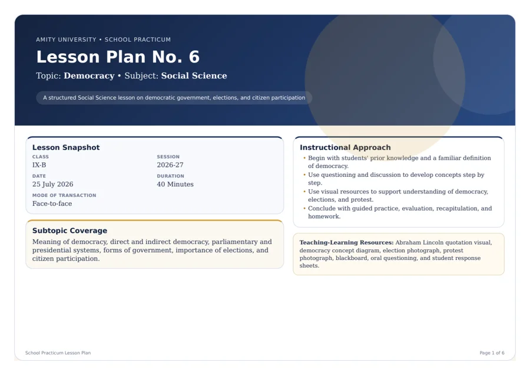

Democracy · Lesson Plan No. 6
A 40-minute school-practicum plan covering democratic government, elections and citizen participation through questioning, visuals, discussion and written practice.
Teaching Resources
Published teaching files, with context and links to the original evidence.
Selected teaching evidence · Lesson plan
A dated Social Science plan for Class IX-B, with prior-knowledge questions, visual resources, discussion and assessment tasks.
The plan records intended teaching and expected responses. Student work and completed reflection are not included.

Teacher’s Resource Library
1 file in the library
A 40-minute school-practicum plan covering democratic government, elections and citizen participation through questioning, visuals, discussion and written practice.
No teaching files match this search.
Completed student responses, marked feedback and lesson reflections have not yet been published.